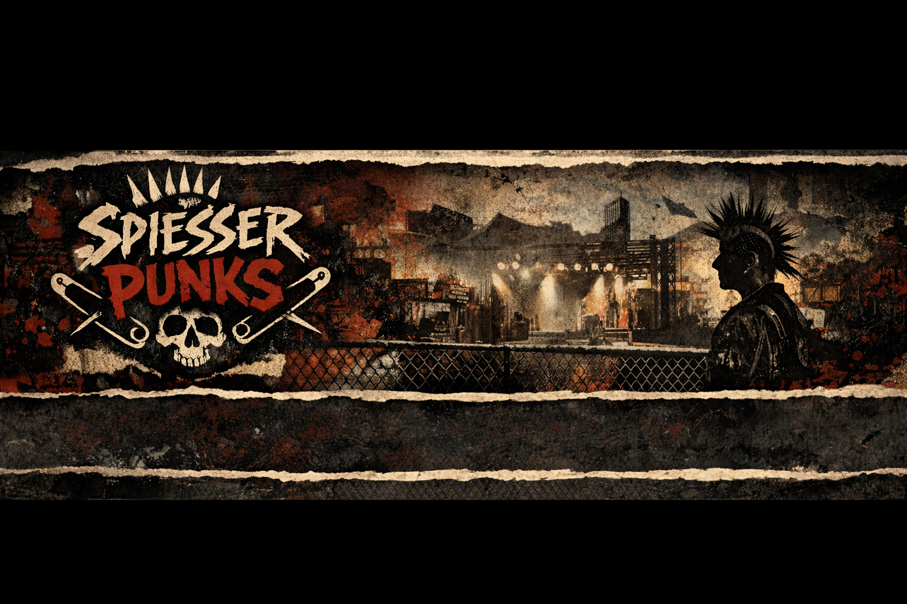

SOLIDARITÄT
Unterstützung
Wir stehen Mitgliedern in schwierigen Lebenslagen mit finanzieller, organisatorischer und sozialer Unterstützung zur Seite.

Das Spiesserpunks Netzwerk e.V. ist ein gemeinnütziger Verein mit Sitz in Münster. Wir fördern bürgerschaftliches Engagement und unterstützen Mitglieder*innen finanziell, organisatorisch und sozial in schwierigen Lebenslagen.
Wir stehen Mitgliedern in schwierigen Lebenslagen mit finanzieller, organisatorischer und sozialer Unterstützung zur Seite.
Unser Verein setzt sich für bürgerschaftliches Engagement zugunsten gemeinnütziger Zwecke ein und fördert aktives Mitgestalten.
Wir schaffen ein verlässliches Netzwerk, das Menschen verbindet, trägt und gemeinsames Handeln möglich macht.